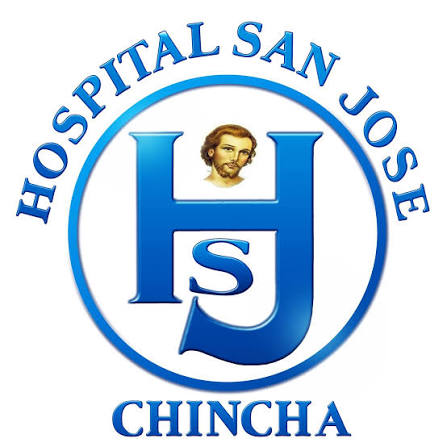
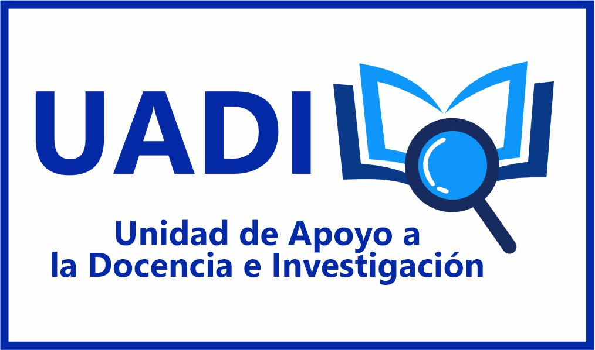
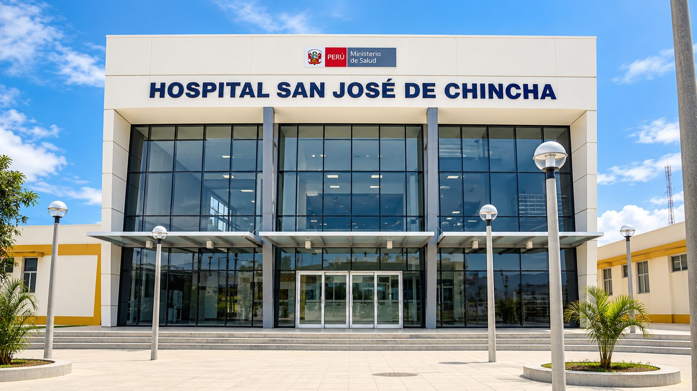

¿Qué es UADI?
Es la unidad encargada de gestionar, coordinar y promover la formación académica, la investigación y la capacitación del personal de salud, contribuyendo al desarrollo del conocimiento y a la mejora de la atención en salud.


Unidad de Apoyo a la Docencia e Investigación del Hospital San José de Chincha.

Es la unidad encargada de gestionar, coordinar y promover la formación académica, la investigación y la capacitación del personal de salud, contribuyendo al desarrollo del conocimiento y a la mejora de la atención en salud.
Fomentar la formación académica y la investigación en salud, fortaleciendo las competencias del personal y de los estudiantes.
Ser una unidad reconocida por su liderazgo en la docencia, investigación y formación continua en el ámbito de la salud.
Promover y gestionar actividades de docencia, investigación y capacitación que contribuyan a la mejora de la atención en salud.
Áreas que apoyan la docencia, la investigación y la formación en salud.
Gestionamos prácticas, internado y residentado médico.
Impulsamos y acompañamos proyectos de investigación.
Organizamos cursos, talleres y actividades de capacitación.
La información publicada es de orientación. Para consultas, utiliza los canales oficiales del hospital o acércate a UADI.